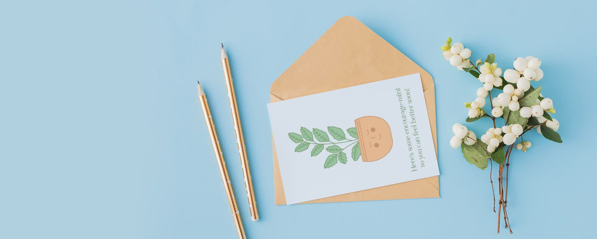

Printable Get Well Cards And Wishes For a Speedy Recovery
Published on 8-02-2021

In times of social distancing, wishing someone who’s sick a quick recovery
can be tricky. If they tested positive for COVID-19, you won’t be doing anyone a favor by visiting
your friend or family member and compromising your own health. Luckily, we live in the 21st century
so you can text or call them and make them feel better with some well wishes.
While it’s nice to check up on someone who’s sick at home by calling or texting, the best way to
show your loved ones that they are in your thoughts is by sending a sweet get well card. Since
delivering joy is our speciality, we decided to craft a few cute and funny get well cards that you
can print out at home. Each card is available as a colored and black and white version in case you
want to save on printer ink. Simply print the card you wish to send on a U.S. letter sized piece of
paper, cut and fold according to the indications on the printable and write a message inside that
wishes them a speedy recovery.
Whether you send the card on its own or alongside a bouquet of flowers, they will appreciate the
extra effort you put into showing how much you care.
When to Write a Feel Better Card
There are plenty of situations when sending a get well card is a better option than visiting.
Whether it’s because they have a compromised immune system, live too far away or are feeling under
the weather, in these cases it’s probably best for you to keep your distance. Just because you can’t
visit them doesn’t mean you can’t cheer them up with a call or a handwritten letter. A personalized
get well card shows them how much you care and is a keepsake they can pick up when they’re feeling
sad or alone.
Writing a card instead of visiting someone is also a great way to show a coworker that you care
about them and hope they’ll feel better soon. They may not be comfortable with you showing up in
person and seeing them in a state that is different from what they’d look like at work. A card
however is a simple yet powerful way to cheer them up and remind them that people other than their
family and closest friends are sending them positive thoughts.